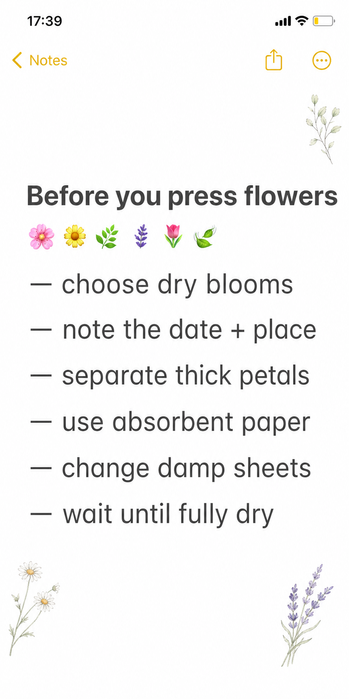
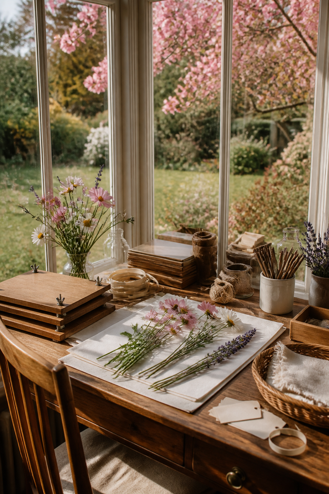

The prettiest pressed-flower craft begins before the flower enters the book. A few minutes of preparation protects the paper, reduces browning, and preserves the small details—when and where you found the bloom—that turn a specimen into a memory.

Choose flowers after the moisture has gone
Pick on a dry day after dew has evaporated. Avoid blooms with rain caught in their centers or petals already bruised at the edges. Flat flowers such as violets and cosmos are forgiving. Thick roses and layered heads may need to be separated into petals or sliced carefully before pressing.
Record the story first
On a small pencil label, note the date, place, and any detail you want to remember. Do this before arranging specimens; several pale flowers can look surprisingly alike after drying. Keep the label beside the flower inside the press rather than relying on memory.

Use clean absorbent layers
Place flowers between plain, uncoated absorbent sheets. Arrange petals with tweezers so folds do not create dark creases. Add weight evenly. If a specimen is juicy or the paper feels damp after the first day, replace the sheets carefully.
Wait until the flowers feel papery and completely dry before sealing them into a craft. Use tiny dots of archival adhesive beneath sturdy areas and avoid laminating fresh-looking blooms; trapped moisture is what causes later discoloration.
Visuals in this article were created with AI assistance and art-directed for Sentimentalica.
Find more botanical craft ideas in the Sentimentalica journal archive.